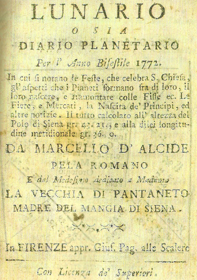
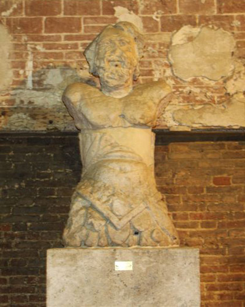
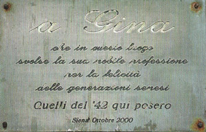

Era infatti costituita da un'ampia vasca coperta da una volta in muratura e con al centro, posta sopra un pilastro, una scultura quattrocentesca raffigurante un
, ovvero una creatura mitologica con la testa e il busto di uomo e con il corpo di pesce. La statua era acefala e, forse per accrescerne la mostruosità, la testa maschile era stata sostituita con una testa ricavata da un'altra scultura che rappresentava una donna anziana, ovvero una vecchia, e fu così che nacque la
.
A questo punto la statua era davvero mostruosa. Il corpo di un pesce con il busto di un uomo e la testa di una vecchia.
Una figura così stravagante non poteva rimanere ignorata dal popolino, che ben presto le assegnò il ruolo di prostituta metaforica grazie al quale entrò a pieno diritto nella tradizione senese.
Del resto in epoca molto più vicina a noi, negli anni Cinquanta e Sessanta del Novecento, anche la pacifica e prosperosa
della fontana del Monte dei Paschi, all'inizio di via Montanini, venne irrispettosamente ribattezza "
".
La
Vecchia dunque, era entrata a far parte delle tradizioni senesi e quando, magari nel corso di un'animata discussione, uno dei due contendenti voleva chiamare in causa la mamma dell'altro, gli si rivolgeva chiamandolo "figliol della Vecchia di Pantaneto". Offesa, questa così diffusa nella Siena del Settecento che venne usata anche da Marcello Pela, un
lunarista romano emigrato a Siean che, certo di non essere frainteso, la stampò sul frontespizio del lunario da lui pibblicato nel 1772.
In quell'epoca e già da qualche secolo, le pubblicazioni più diffuse tra il popolo erano i lunari, o almanacchi, che venivano spesso venduti dalla stessa persona che
almanaccandosi il cervello li aveva redatti e provvedeva poi a smerciarli lungo le strade.
A Siena fin dal 1759, veniva pubblicato nella tipografia di Luigi e Benedetto Bindi l'almanacco del
Mangia, che prendeva nome dall'automa ligneo collocato su un merlo della Torre del Palazzo Comunale per segnare le ore indicando il campanone con un'alabarda.
Nel 1766, il Mangia della Torre fu sostituito con un nuovo automa di travertino scolpito dal fiorentino Angelo Bini, e proprio in quegli anni giunse a Siena da Roma il lunarista Marcello Pela col suo
Lunario o sia Diario planetario, che inevitabilmente entrò in concorrenza con l'almanacco del
Mangia. La competizione tra i due lunari si fece ben presto aspra e i redattori del
Mangia non mancavano di porre in evidenza le profezie del Pela che si erano rivelate errate.
Gli almanacchi, più che di ragionamenti basati su un minimo di logica, erano zeppi di profezie così strampalate - veniva addirittura previsto il tempo per tutto l'anno - da rendere difficile credere che vi fosse qualcuno disposto ad acquistarli, anche se, come ci informa Giacomo Leopardi con il
Dialogo di un venditore di almanacchi e di un passeggere costavano solo trenta soldi, ovvero una lira e mezzo.
Sfogliando alcuni almanacchi non possiamo trattenere il sorriso leggendo previsioni criptiche, infarcite di parole latine per renderle più convincenti e misteriose agli occhi dei semplici lettori. Ciò nonostante gli almanacchi avevano successo fra il popolo e non erano pochi coloro che, credendo veramente ai loro pronostici, spendevano qualche soldo per acquistarli.
Marcello Pela, per ingraziarsi i lettori senesi, arricchiva il suo almanacco con notizie relative alle Contrade, ai professori dell'Università e alle diligenze che collegavano Siena con altre località, ma la sua caratteristica principale erano le "predizioni": "23 giugno, lo Scorpione nella sesta vuol catarri falsi, calcoli e mal d'orina alla cavalla, vento caldo", "25 agosto, Sole congiunto con Saturno. Cosa pessima. Sol cum Saturno coniunctus, pluvias, dies oscuro, grandini casum", "26 ottobre, ventoso ma sereno, il Toro nella sesta dà febbri con vomito e dolori d'intestini", "10 novembre, il Cancro nella sesta dà catarri, tossi e raucedini", "30 dicembre, tempo bazzotto".
E' facile immaginare che se, per esempio, il 25 agosto non fosse grandinato o se il 26 ottobre fosse stato nuvolo e senza vento, le previsioni del Pela sarebbero state smentite, ma il lunarista, per salvare la faccia, sperava che a qualcuno dei suoi lettori arrivasse nei giorni previsti almeno uno dei malanni da lui annunciati.
La concorrenza, e soprattutto le aspre critiche che gli venivano puntualmente mosse dagli editori dell'almanacco senese, stancarono Marcello Pela che nel 1772 pubblicò il suo
Lunario dedicandolo "a Madama La Vecchia di Pantaneto Madre del Mangia di Siena".
Per offendere pesantemente gli autori del
Mangia, Pela usò quindi un'ingiuria tipicamente senese e identificando i suoi avversari nella statua della Torre, fece discendere il
Mangia direttamente da un personaggio famoso ma poco ragguardevole com'era appunto la
Vecchia di Pantaneto.

Dotò inoltre il suo
Lunario di quell'anno - una pubblicazione particolarmente rara in quanto ne è noto un solo esemplare - di un'antiporta decorata con una xilografia raffigurante la Fonte di Pantaneto con la statua della Vecchia, e sullo sfondo una stilizzatissima Torre sormontata dal Mangia armato della sua alabarda.
Per chiarire meglio il concetto, aggiunse anche un'appendice intitolata
Marcello Pela o sia risposta al Mangia - nella quale rivolgendosi direttamente al Mangia ribadì la sua stretta parentela con la Vecchia ed elencò le previsioni sbagliate pubblicate negli ultimi anni nel lunario senese.
La concorrenza tra i due almanacchi proseguì anche negli anni successivi, ma il lunarista romano, fingendo indifferenza, non scese più in aperta polemica con il
Mangia e proseguì pertanto a pronosticare tempo e malattie. Nel
Lunario del 1775, per esempio, leggiamo che il 7 novembre "la Luna infermiera con tutti i suoi recipe fa andare molti vecchi all'altro mondo", scatenando sicuramente una quantità di scongiuri da parte dei suo lettori più anziani.
Il 7 dicembre previde che "con l'Ariete nella sesta" erano da aspettarsi "febbri con pustole, bubboni e stiramento di nervi". Quest'anno, comunque, oltre a preannunciare malanni e acciacchi di ogni sorta, il Pela offrì ai suo lettori anche una singolare terapia preventiva: "Per star sani bevete del vino, e non mai dell'acqua pura".
Di Marcello Pela perdiamo le tracce nel 1787, mentre abbiamo ancora qualche notizia a proposito delle due statue del
Mangia e della
Vecchia. La prima fu tolta nel 1780 dalla Torre per finire nei fondi del Palazzo Comunale, negli attuali Magazzini del Sale, dove nel 1813 fu raggiunta da sua "madre", la Vecchia di Pantaneto che era stata tolta dalla Fonte in occasione di un suo restauro. Le due sculture rimasero insieme per qualche anno, poi nel 1824, il
Mangia fu trasferito al centro di un laghetto artificiale nella giardino della villa di Pagliaia in Chianti. Una volta prosciugato il laghetto la statua cadde nel fango, da cui fu tratta nel 1927 da Ranuccio Bianchi Bandinelli che la fece collocare all'interno dell'Entrone dove ancora si trova.

La
Vecchia invece, dopo essere stata restaurata, fu collocata sotto il ponte della Fortezza che da allora ne porta il nome, nonostante che nel 1829 sia stata distrutta a colpi di pietra da alcuni vandali.

La signora Gina (
cfr.) dunque, negli anni Cinquanta del secolo scorso assunse inconsapevolmente lo stesso ruolo che molto tempo prima era stato metaforicamente svolto dalla
Vecchia di Pantaneto, e la sua attività, per niente metaforica, è stata recentemente ricordata in una delicata iscrizione apposta nell'ottobre 2000 sul pilastro del Ponte della Vecchia per iniziativa di alcuni senesi nati nel 1942.

da "Il Carroccio" n. 157 del gennaio-febbraio 2012
ALTRE RICERCHE DI ALESSANDRO LEONCINI: